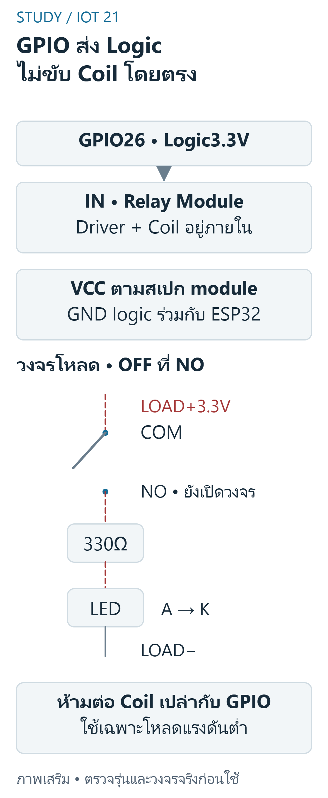
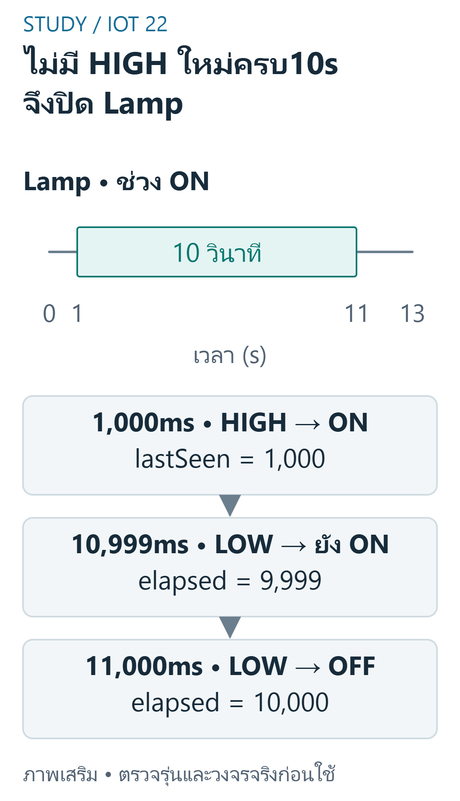
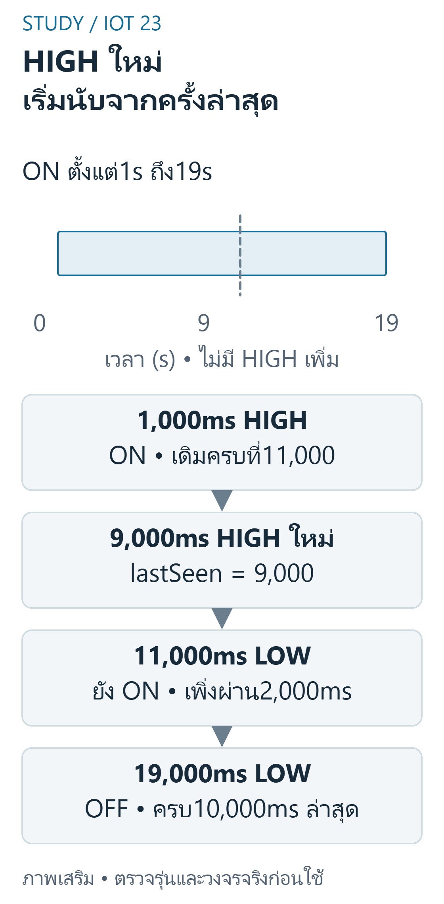

FINAL 08 — Relay และ Nonblocking Timers
เป้าหมายการเรียนรู้
- อธิบายความต่าง logicinput,coil และ contact ของ relay
- ออกแบบฟังก์ชัน mappingLampstate ไป physicalIN
- อธิบาย state หลัง 9999 และ 10000ms ที่ไม่มี motion
- สร้าง trace ที่ motion กลับมาก่อน timeout และทำนาย state
- ออกแบบ test ก่อน / หลัง wrap และตรวจ inputdata ชนิด 32bit
ขอบเขต หลักฐาน และความปลอดภัย
วิชา 89022567 เลือกศึกษา Week 9–12 โดยยังไม่ยืนยันว่าเป็นขอบเขตสอบ Final ทางการทั้งหมด หลักฐานต้นฉบับ: W12 functions1–3; S12 pp.14–19. เลขหน้า PDF หมายถึงหน้าจริงของไฟล์ (physical page); เอกสาร Word อ้างหัวข้องานและหน้าแปลงส่วนตัวตาม บัญชีแหล่งที่มา. ไม่เผยแพร่ต้นฉบับหรือข้อมูลส่วนตัวของผู้เรียน
ตัวอย่างและเฉลยต่อไปนี้จัดทำเสริม ไม่ใช่เฉลยทางการ ใช้บอร์ด classic ESP32-WROOM กับ Arduino-ESP32 core 3.3.11 เป็นเป้าหมาย ตัวเลขขา ระดับสัญญาณ (polarity) เกณฑ์ช่วง (threshold) และที่อยู่จอ OLED เป็นสมมติฐานที่ประกาศ ห้ามเหมารวมกับ ESP32 ทุกรุ่น
ใช้เฉพาะ LED หรือโหลดแรงดันต่ำผ่านโมดูล/วงจรขับที่เข้ากันได้ ห้ามขับขดลวดรีเลย์จาก GPIO โดยตรง และห้ามต่อไฟบ้านบน breadboard ตรวจ Echo 5V กับ GPIO 3.3V วงจรแปลงระดับ กราวด์ และตัวต้านทานก่อนจ่ายไฟ การคอมไพล์และการจำลองไม่พิสูจน์ความถูกต้องของวงจรหรือความแม่นยำเซนเซอร์จริง
Relay Coil, Driver และ Contacts
relaycoil เป็นโหลดกำลังต้องใช้ driver / module ที่เหมาะและป้องกัน inductivekick ตามการออกแบบ GPIO ส่ง logic ไป input ที่ compatible เท่านั้น COM / NO / NC เป็นฝั่ง contact ไม่ใช่ VCC / GND ของ logic NO หมายถึงเปิดเมื่อ coil ไม่ energized ตามกลไกที่ระบุ ภาพ ESP8266 ใน S12 ไม่ใช่ pinoutESP32

อ่านภาพ: ตรวจmoduleVCC/input/polarityจริง GPIOคุมINเท่านั้น driverในmoduleขับcoil ส่วนCOM/NOเป็นcontactของวงจรLEDแรงดันต่ำ ภาพไม่รับรองisolationหรือbootstateของmoduleจริง
ตารางตรวจสายของภาพนี้ — ไม่ใช่ลำดับขา header
| จาก | ถึง | ชนิด / เงื่อนไข |
|---|---|---|
| ESP32 GPIO26 | Relay module IN | Signal: input3.3V-compatible,activeLOW assumption |
| Relay module VCC / GND | แหล่งไฟตามสเปก / GNDร่วมESP32 | Power / Ground: ตรวจmoduleจริง |
| LOAD+3.3V | COM → NO → R330Ω → LED A | Low-voltage contact circuit; symbol shows OFF |
| LED K | LOAD− | Load return; not a coil connection |
ข้อควรระวัง: ห้ามต่อ coil เปล่าหรือไฟบ้านบน breadboard สำหรับบทเรียนนี้
ตัวอย่างการให้เหตุผลที่จัดทำเสริม:
ส่วนใดไม่ควรต่อขับโดยตรงจาก GPIO?
แนวคำตอบ: relaycoilเปล่า — coil ต้องมี driver / powersupply และ protection
Active-LOW กับ State เปิด/ปิด
บทนี้สมมติ relaymodule ที่ตรวจแล้วรับ logic3.3V และ activeLOW จึง LampON→INLOW และ OFF→INHIGH ไม่ใช่กฎทุก module ตั้ง OFF ใน setup และใช้ hardwarebias ที่เหมาะหากต้องป้องกัน startupglitch; softwareinit อย่างเดียวไม่รับรองช่วง boot / brownout
ข้อควรระวัง: HIGH บน IN อาจหมายถึง OFF ใน module ที่เลือก
ตัวอย่างการให้เหตุผลที่จัดทำเสริม:
สมมติ activeLOW และ lampON=true; physicalHIGHflag=!lampON มีค่า int เท่าใด?
แนวคำตอบ: 0 — ON จึง INLOW ใน assumption นี้
millis และเงื่อนไขครบเวลา
เก็บ uint32_t lastSeen กับ now และทดสอบ uint32_t(now-lastSeen)>=10000U เมื่อ LampON และไม่มี motion ใช้เวลาที่สังเกต PIR จริงใน loop ห้าม delay10000 เพราะจะไม่กลับมาอ่าน retrigger sampling / I2Clatency ทำให้เวลาปิดจริงอาจช้ากว่า deadline ตามรอบ poll

อ่านภาพ: หลังพบHIGHที่1000ms ตัวอย่างใช้elapsed=now−lastSeen;10999−1000=9999จึงยังON และ11000−1000=10000จึงOFFเมื่อไม่มีHIGHใหม่ การpolling/APIอาจเพิ่มlatencyจริง
ข้อควรระวัง: >=รวม exactboundary แต่>จะช้ากว่าเมื่อเวลาเท่าพอดี
ตัวอย่างการให้เหตุผลที่จัดทำเสริม:
lastSeen1000,now10999; elapsed กี่ ms?
แนวคำตอบ: 9999 — 10999−1000=9999ms ยังน้อยกว่า 10000 จึงยังไม่ครบ timeout;อย่าปิดก่อนขอบที่กำหนด
Motion ใหม่รีเซ็ต Inactivity
เมื่อ observedmotionHIGH ให้ lampON และ lastSeen=now ทุกครั้ง ถ้า LOW ให้ถือ ON จน elapsed ถึง 10000ms การมี HIGH ใหม่แม้ใกล้ deadline ทำให้ deadline เลื่อนไปตาม observation ล่าสุด ไม่ใช้เวลาตั้งแต่เปิดครั้งแรกเป็น inactivitytimer

อ่านภาพ: ติดตามlastSeenที่ถูกเขียนทับ:9,000+10,000=19,000ms จึงไม่ปิดที่11,000ms ถ้าHIGHเข้ารอบพอดีdeadline สาขาmotionจะคงONและเริ่มนับใหม่
ข้อควรระวัง: motiontextLOW ได้แต่ lamp ยัง ON ใน holdwindow
ตัวอย่างการให้เหตุผลที่จัดทำเสริม:
motion ที่ 1000ms และ 9000ms; deadline ปิดหลังไม่มี HIGH เพิ่มเติมเป็นกี่ ms?
แนวคำตอบ: 19000 — ใช้ lastSeen ล่าสุด 9000 ไม่ใช่ 1000
Unsigned Rollover และข้อจำกัด
uint32_t ลบแบบ mod2^32 ช่วยผ่าน milliswrap เมื่อ elapsed จริงน้อยกว่าหนึ่งรอบเต็มและ polling ไม่เว้นจนกำกวม ใช้ now-lastSeen ไม่เปรียบ now>=lastSeen+timeout ตรงๆ การไม่ใช้ delay ยาวไม่ได้ทำให้ทุก APIzero-latency ต้องทดสอบ wrap และ startup แยก
ข้อควรระวัง: signedoverflow ไม่ใช่กลยุทธ์ timer ที่ปลอดภัย
ตัวอย่างการให้เหตุผลที่จัดทำเสริม:
uint32_t last=4294967040U,now=9744U; uint32_t(now-last)เท่าใด?
แนวคำตอบ: 10000 — ผ่าน wrap ด้วย mod2^32
ตารางเวลาอิสระที่ใช้ตรวจ
สมมติobservedPIRactiveHIGHและrelayactiveLOW;แถวLOWใช้เวลาที่สังเกตไม่ใช่ยืนยันเวลาคนหยุดเคลื่อนจริง
| now(ms) | Motion | lastSeen(ms)หลังประมวลผล | Lamp | INrelay |
|---|---|---|---|---|
| 0 | LOW | 0 | OFF | HIGH |
| 1000 | HIGH | 1000 | ON | LOW |
| 9000 | HIGH | 9000 | ON | LOW |
| 11000 | LOW | 9000 | ON | LOW |
| 18999 | LOW | 9000 | ON | LOW |
| 19000 | LOW | 9000 | OFF | HIGH |
โปรแกรม C++ ที่เขียนเสริม
สเก็ตช์ C++ นี้เขียนเสริมสำหรับเป้าหมายที่ระบุ คอมเมนต์อธิบาย API และสมมติฐาน มีการตรวจคอมไพล์จริง แต่ไม่มีการอัปโหลดหรือวัดผลฮาร์ดแวร์ ห้ามนำไปต่ออุปกรณ์ที่ยังไม่ทราบสเปกโดยตรง
#include <Arduino.h>constexpr uint8_t PIR_PIN=33, RELAY_PIN=26;// เฉพาะmodule/driverที่ตรวจแล้วว่าinput3.3V-compatibleและactiveLOW;ห้ามขับcoilตรงstruct LampState { bool on; uint32_t seen; };constexpr LampState nextState(LampState s, uint32_t now, bool motion) { return motion ? LampState{true,now} : (s.on && uint32_t(now-s.seen)>=10000U ? LampState{false,s.seen} : s);}LampState lamp{false,0};void setup() { pinMode(PIR_PIN,INPUT); pinMode(RELAY_PIN,OUTPUT); digitalWrite(RELAY_PIN,HIGH); // OFF;ไม่รับรองstartupก่อนsetup}void loop() { const bool motion=digitalRead(PIR_PIN)==HIGH; const uint32_t now=millis(); lamp=nextState(lamp,now,motion); digitalWrite(RELAY_PIN,lamp.on?LOW:HIGH); // ไม่มีdelay10s;กลับไปอ่านmotionรอบถัดไป}อ่าน Expected Behavior และกรณีขอบ
เริ่มOFF;HIGH1000และ9000ทำให้lastSeen9000;LOW11000ยังON;LOW19000ปิด;HIGHที่deadlineให้ONและresetเวลา
- ห้ามต่อ coil เปล่าหรือไฟบ้านบน breadboard สำหรับบทเรียนนี้
- HIGH บน IN อาจหมายถึง OFF ใน module ที่เลือก
- >=รวม exactboundary แต่>จะช้ากว่าเมื่อเวลาเท่าพอดี
- motiontextLOW ได้แต่ lamp ยัง ON ใน holdwindow
- signedoverflow ไม่ใช่กลยุทธ์ timer ที่ปลอดภัย
ฝึกอธิบายพร้อมแนวประเมิน
โจทย์เหล่านี้จัดทำเสริมเพื่อทบทวน ไม่ใช่ข้อสอบมหาวิทยาลัยที่ยืนยันแล้ว โหมดฝึกและคลังข้อสอบด้านล่างแสดงคำอธิบายหลังส่งคำตอบตามระบบเดิม เมื่อปิด JavaScript ยังอ่านเฉลยในส่วนพับได้ คำอธิบายและโค้ดอิสระใช้เกณฑ์ประเมินตนเอง (rubric) ไม่ตรวจคะแนนอัตโนมัติ
1. Relay Coil, Driver และ Contacts
อธิบายความต่าง logicinput,coil และ contact ของ relay
แนวคำตอบ: วาด lowvoltagecircuit และระบุ driver / polarity / supply อย่างมีหลักฐาน ไม่สรุป isolation จากรูป
2. Active-LOW กับ State เปิด/ปิด
ออกแบบฟังก์ชัน mappingLampstate ไป physicalIN
แนวคำตอบ: กำหนด activelevel สองค่าและทดสอบ ON / OFF / boot โดยแยก simulation จาก hardware
3. millis และเงื่อนไขครบเวลา
อธิบาย state หลัง 9999 และ 10000ms ที่ไม่มี motion
แนวคำตอบ: แยก integerelapsed / ขอบเปรียบเทียบและระบุ pollinglatency
4. Motion ใหม่รีเซ็ต Inactivity
สร้าง trace ที่ motion กลับมาก่อน timeout และทำนาย state
แนวคำตอบ: คำนวณ lastSeen ทุก event และเปรียบเทียบ deadline ใหม่ ไม่สับสนเวลารวมกับเวลาขาด motion
5. Unsigned Rollover และข้อจำกัด
ออกแบบ test ก่อน / หลัง wrap และตรวจ inputdata ชนิด 32bit
แนวคำตอบ: ระบุ modulo,exact10000boundary และข้อจำกัดหนึ่ง wrap พร้อม goldentrace อิสระ
สรุปก่อนสอบ
- Relay Coil, Driver และ Contacts: ห้ามต่อ coil เปล่าหรือไฟบ้านบน breadboard สำหรับบทเรียนนี้
- Active-LOW กับ State เปิด/ปิด: HIGH บน IN อาจหมายถึง OFF ใน module ที่เลือก
- millis และเงื่อนไขครบเวลา: >=รวม exactboundary แต่>จะช้ากว่าเมื่อเวลาเท่าพอดี
- Motion ใหม่รีเซ็ต Inactivity: motiontextLOW ได้แต่ lamp ยัง ON ใน holdwindow
- Unsigned Rollover และข้อจำกัด: signedoverflow ไม่ใช่กลยุทธ์ timer ที่ปลอดภัย
อ้างอิงและข้อจำกัด
- ต้นฉบับส่วนตัว: W12 functions1–3; S12 pp.14–19; ไม่แนบสำเนา ไม่อ้างว่ามีsourceอื่นที่ยังไม่เปิด
- Source coverage, Academic verification, Exam verification, QA
- ESP32 datasheet — ตรวจ2026-10-29;ใช้target/core3.3.11สำหรับcompileและอย่าสมมติว่าlatestdocsตรงกับทุกcoreเก่า
- GPIO API — ตรวจ2026-10-29;ใช้target/core3.3.11สำหรับcompileและอย่าสมมติว่าlatestdocsตรงกับทุกcoreเก่า
ข้อจำกัดที่ยังไม่ยืนยัน: แรงดัน ระดับกระตุ้น ที่อยู่ และการต่อสายของโมดูลจริง ความแม่นยำ สภาพแวดล้อม และวิดีโอทดลอง การตรวจเว็บ/คอมไพล์/จำลองไม่เท่ากับผ่านการทดสอบฮาร์ดแวร์ และไม่ยืนยันขอบเขตข้อสอบจริง